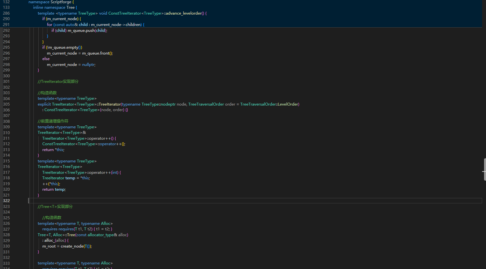
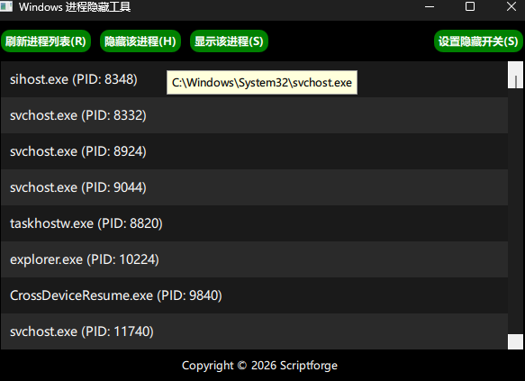
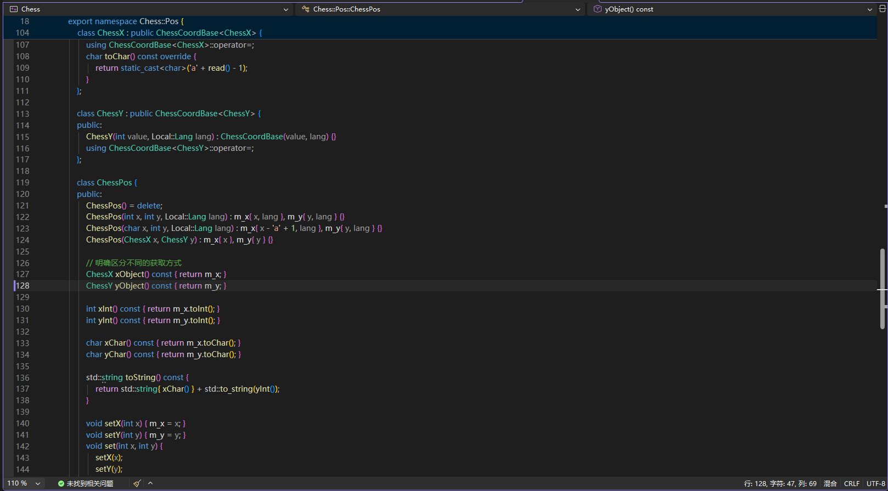

关于我
一位普普通通的中学生，略懂 C/C++ 技术与系统级开发。
除了编程，我还喜欢阅读技术博客、探索反调试机制与底层架构、参与开源项目。始终保持对技术的好奇心与热情，希望通过代码创造有价值的产品。
姓名
ScriptForge
邮箱 (点击复制)
scriptforge@outlook.com
城市
中国 · 苏州
我的技能
C / C++ 开发
熟悉 C/C++ 语言特性，掌握 STL 标准库与数据结构，能够独立进行简单程序与静态库的架构和开发。
服务器运维与 Linux
了解 Linux 操作系统环境，熟悉 Nginx/Apache 部署配置、数据库基础运维等服务器技术。
项目展示

C++ 静态库 (持续更新)
使用 C++ 开发的实用通用静态库，内置树形结构、反调试、日志记录等模块。

C++ & Qt & Win32 隐藏窗口
结合 Win32 API 与 Qt 框架编写的窗口隐藏控制与后台管理实用工具。

C++ 国际象棋逻辑
早期使用 C++ 尝试编写的国际象棋游戏及棋盘规则判定逻辑。
联系我
欢迎交流技术问题，或探讨开源项目协作！